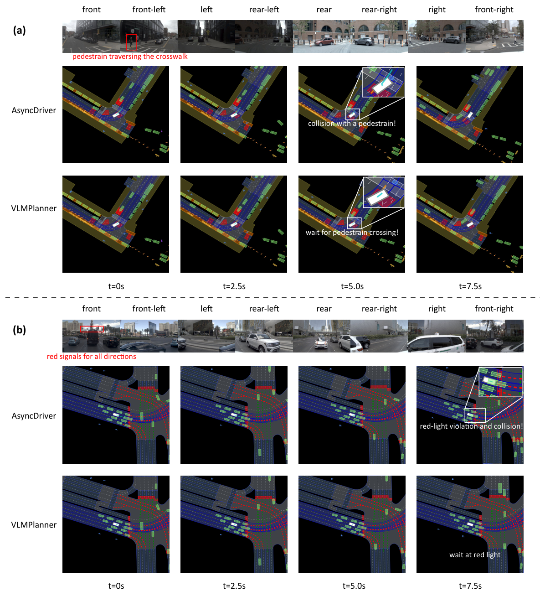

VLMPlanner: VLM-based Motion Planning for Autonomous Driving
- Used vision-language models to reason about fine-grained traffic conditions from multi-view onboard images.
- Designed a scene-complexity-aware inference mechanism to improve safety and robustness while reducing real-time computational overhead.
- Validated the method with open-loop and closed-loop experiments in nuPlan.
